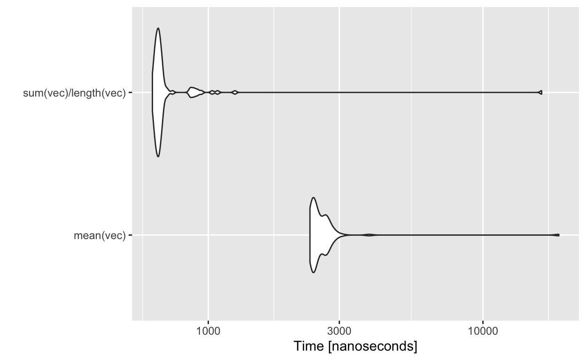
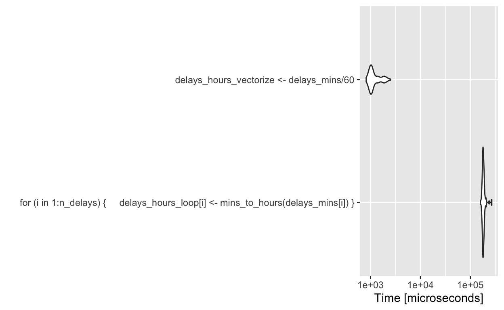

In the previous tutorial, you learned about using for loops to repeat an operation in each value in a series of values. In this tutorial, we will contrast for loops with an alternative technique, vectorization. You will learn how to vectorize functions as well as compare the time it takes to run functions in R with a technique called benchmarking.
We will learn the following R Commands:
• microbenchmark()
And we will use the following datasets: The flights dataset from the R package nycflights13, which contains all flights out of New York City in 2013.
Before we learn how to compare for loops to vectorization, we need to learn about benchmarking. Benchmarking is used to measure the amount of time it takes to perform a computation in R. There are a number of ways to do so, but we will be using the R package microbenchmark.
To install microbenchmark, run the following code:
install.packages('microbenchmark')Then to use it, load the library:
library(microbenchmark)We can then use the microbenchmark() function to output timing results for a line of R code. Here, let’s show how to measure the time it takes to get the mean of a numeric vector.
vec <- runif(100)
test_results <- microbenchmark(mean(vec))microbenchmark works by running the code many times and calculating the runtime for each calculation. Each individual runtime is stored in test_results. Let’s take a look at them here:
glimpse(test_results)## Rows: 100
## Columns: 2
## $ expr <fct> mean(vec), mean(vec), mean(vec), mean(vec), mean(vec), mean(vec),…
## $ time <dbl> 199347, 4727, 2923, 3016, 2398, 2406, 2933, 2449, 2845, 2459, 252…We can summarize the results using summary(test_results).
summary(test_results)The results here are in a dataframe, showing the expression run, along with its min, mean, median, upper and lower quartiles, and the number of times it was ran. You also get information about what unit the runtime was measured in. Here, it’s microseconds. In this case, the calculation is incredibly fast - the mean runtime was summary(test_results)$mean microseconds.
microbenchmark's real power comes from its ability to compare different expressions in R. Let’s see if the R function mean() is faster than computing it ourselves using the sum() and length() functions.
test_results_2 <- microbenchmark(
mean(vec),
sum(vec)/length(vec)
)
summary(test_results_2)Here, the results are in nanoseconds. It turns out that using sum() and length() is actually faster than mean(). However, with a difference as trivial as 1861.7 nanoseconds, it’s probably best to use the simple convenience function mean().
You can even plot the results quite easily, using the autoplot() function from ggplot2, which automatically draws the plot that works best with the class of object it is given (in this case, it makes a violin plot).
autoplot(test_results_2)
Calculating a mean of 100 numbers is a computationally trivial thing to do. However, not all the code you write will be doing something so simple. Next, we will learn how for loops and vectorization compare, and then measure the differences using microbenchmark.
Let’s start off with a review of for loops. To do so, we’re going to use the flights dataset.
In this dataset, each row is an individual flight out of New York City. The column dep_delay contains the difference between the scheduled departure and the actual departure time, but in minutes. Now let’s say we wanted to convert that to hours. To do so, we would divide each value in dep_delay by 60. We can do that using a for loop, and store the results in a vector.
First, we store all the departure delays in minutes, in a vector called delays_mins(making sure to remove NA values for when a delay was not available). The number of delays is calculated using the length function, and is stored as n_delays. Then, we create the vector delays_hours_loop to store the results of our computation, and the mins_to_hours() function to actually compute the results.
delays_mins <- !is.na(flights$dep_time)
n_delays <- length(delays_mins)
delays_hours_loop <- vector('numeric',n_delays)
mins_to_hours <- function(x) x/60
for(i in 1:n_delays){
delays_hours_loop[i] <- mins_to_hours(delays_mins[i])
}head(delays_hours_loop)## [1] 0.01666667 0.01666667 0.01666667 0.01666667 0.01666667 0.01666667The operation worked just fine, and the results are stored in delays_hours_loop. However, given that there are 336776 observations in this dataset, you may imagine that this many individual function calls can get computationally intensive. Though our current function is fairly simple, you may imagine that with more complex operations, the computation cost will add up fast. The next section will go through an alternative to for loops.
Rather than using a for loop, we can vectorize our conversion of minutes to hours function by applying it to all the elements in delays_mins simultaneously. This is called vectorizing. Doing so is fairly simple, and it’s often faster than a for loop.
We can use our previous example of converting flight delays to hours.
delays_mins <- !is.na(flights$dep_time)
delays_hours <- delays_mins/60Notice that here, we didn’t even have to write a function. We just performed the operation by dividing delays_mins by 60 (which automatically performs the division on each element of the vector, i.e. vectorizing). We could have called the mins_to_hours() function, but it’s not necessary to do so.
Now that we know about for loops and vectorization, we can use microbenchmark to compare the two. We will use the same example, converting delays_mins to hours, using both methods.
results_lv <- microbenchmark(
for(i in 1:n_delays){
delays_hours_loop[i] <- mins_to_hours(delays_mins[i])
},
delays_hours_vectorize <- delays_mins/60
)
summary(results_lv)autoplot(results_lv)
Besides the advantage of being simpler to read, vectorization is clearly faster than a for loop in this case.
Sometimes you have something more complicated, that can’t be performed in a single line of code. You can do it in a for loop, or you can use a function from the apply family to vectorize it.
To demonstrate the apply functions, let’s start out with a simple example. Let’s say we have a vector containing
There are several apply functions in R, including lapply(), sapply(), vapply(). They all work by taking an argument X, which is a data structure (e.g., vector) containing all the elements to apply a function to. The function is specified with the argument FUN.
There are some differences between the functions, so we’ll start out with the simplest function, sapply(). sapply() is great here because it automatically simplifies the output to a vector if possible.
Below we use sapply() to perform the mins_to_hours() calculation on each elements of flights$dep_time, still storing the results in a vector called delays_hours_sapply.
delays_hours_sapply <- sapply(delays_mins, mins_to_hours)Note that the results will be identical between the for loop and the sapply version, which we can verify below.
unique(delays_hours_loop==delays_hours_sapply)## [1] TRUEHowever, the sapply version is both simpler to read and computationally faster. We will get into how to measure this in the benchmarking section.